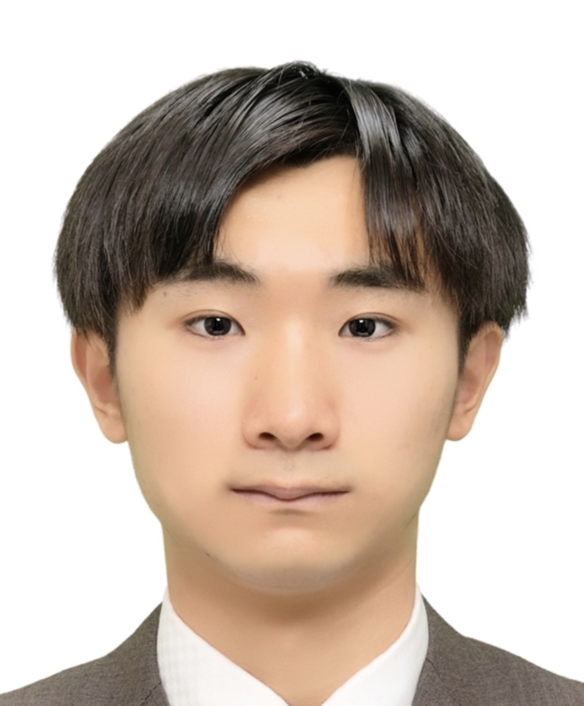

PERSONAL WEBSITE
尾﨑 巧
Takumi Ozaki

ABOUT
About
Biography
I am a master's student in the Graduate School of Economics at Hitotsubashi University.
My research interests include international political economy, development economics, environmental economics, and energy policy.
I am particularly interested in how political institutions and international cooperation influence economic development and the global energy transition.
NEWS
News
Recent Updates
-
2026.08
Exchange
Participating in an exchange program in Canada.
-
2026.07
Website
Launched my personal academic website.
-
2026.06
Research
Started a research project on international political economy and energy transition.
RESEARCH
Research Interests
Fields
My current research interests include international political economy, development economics, environmental economics, energy policy, and quantitative empirical analysis using panel data.
EDUCATION
Education
Academic Background
-
2025–Present
Graduate School of Economics, Hitotsubashi University
Master's Program
-
2021–2025
Faculty of Economics, Hitotsubashi University
Bachelor of Economics
PROJECTS
Projects
Selected Work
-
2026
Energy Transition and International Political Economy
Research project using panel data analysis in R.
-
2025–
Exchange Program Preparation
Research plan and coursework for study abroad in Canada.